set.seed(123)
population <- rnorm(100000, mean = 120, sd = 15)
hist(
population,
breaks = 50,
main = "Population Distribution",
xlab = "Systolic blood pressure"
)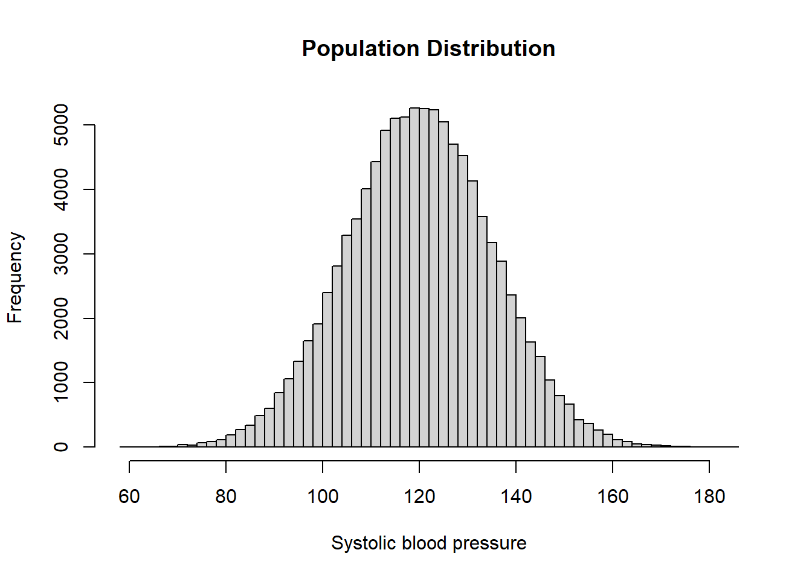
mean(population)[1] 120.0147sd(population)[1] 14.996의학 연구에서 우리가 알고 싶은 것은 보통 표본 그 자체가 아니라 모집단(population)이다. 예를 들어 200명의 고혈압 환자에서 평균 수축기 혈압이 132 mmHg였다고 하자. 이 숫자는 연구에 참여한 200명에 대한 정확한 요약값이다. 하지만 연구자가 실제로 알고 싶은 것은 보통 다음 질문이다.
이 연구 결과를 전체 고혈압 환자 모집단에 대해 얼마나 믿고 일반화할 수 있는가?
이 질문에 답하려면 표본평균이 표본마다 흔들린다는 사실을 이해해야 한다. 표본을 한 번 뽑으면 하나의 평균이 나오지만, 다른 표본을 뽑으면 평균은 달라진다. 이처럼 표본에서 계산한 통계량이 반복 표본추출에 따라 어떻게 달라지는지를 설명하는 개념이 표본분포이고, 그 흔들림의 크기를 하나의 숫자로 요약한 것이 표준오차이다.
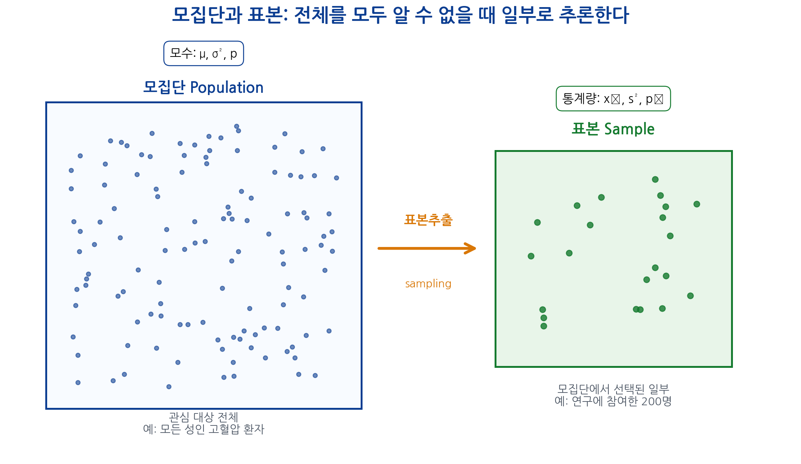
표본에서 얻은 결과는 항상 흔들린다. 표준오차는 그 흔들림을 수량화한 값이며, 신뢰구간과 가설검정은 이 흔들림을 바탕으로 만들어진다.
이번 장에서는 다음 예제를 반복적으로 사용한다.
어떤 병원 연구자가 성인 고혈압 환자의 평균 수축기 혈압을 알고 싶다고 하자. 모집단 전체를 조사할 수 없으므로 환자 \(n\)명을 표본으로 뽑아 평균 혈압을 계산한다.
\[\bar{X}=\frac{1}{n}\sum_{i=1}^{n}X_i\]
이 예제를 통해 다음을 학습한다.
새로운 치료제의 성공률을 알고 싶다고 하자. 실제 모집단 성공률은 \(p\)이지만 알 수 없다. 표본에서 성공한 환자의 비율 \(\hat{p}\)를 계산하여 \(p\)를 추정한다.
\[\hat{p}=\frac{\text{치료 성공자 수}}{\text{전체 표본 수}}\]
이 예제는 비율의 표본분포와 신뢰구간으로 확장된다.
입원 기간이나 의료비처럼 오른쪽으로 치우친 자료를 생각해 보자. 원자료가 정규분포가 아니더라도 표본평균의 분포는 표본 크기가 커질수록 정규분포에 가까워진다. 이 예제는 중심극한정리의 직관을 보여준다.
모집단(population)은 연구자가 관심을 가지는 전체 대상이다. 모집단은 반드시 현실에서 명확히 접근 가능한 사람들의 목록일 필요는 없다. 연구 질문이 가리키는 이론적 대상 전체일 수도 있다.
예를 들어 다음은 모두 모집단이 될 수 있다.
| 연구 질문 | 가능한 모집단 |
|---|---|
| 한국 성인의 평균 혈압은 얼마인가? | 한국 성인 전체 |
| 만성 B형간염 환자의 간암 발생률은 얼마인가? | 만성 B형간염 환자 전체 |
| 특정 항암제의 반응률은 얼마인가? | 해당 항암제를 사용할 수 있는 대상 환자 전체 |
| 당뇨 환자의 평균 HbA1c는 얼마인가? | 당뇨병 환자 전체 또는 특정 병원 당뇨병 환자 전체 |
모집단의 모든 대상을 조사하면 가장 직접적인 답을 얻을 수 있다. 그러나 실제 의학 연구에서는 대부분 불가능하다. 비용, 시간, 윤리적 문제, 접근성, 추적 관찰의 어려움 때문이다.
따라서 연구자는 모집단의 일부인 표본을 조사하고, 그 결과를 바탕으로 모집단에 대해 추론한다.
표본(sample)은 모집단에서 선택된 일부 대상이다.
예를 들어 다음은 표본이다.
표본은 모집단을 대표해야 한다. 표본이 모집단을 잘 대표하지 못하면 아무리 표본 크기가 커도 잘못된 결론을 낼 수 있다.
예를 들어 전국 성인의 평균 혈압을 알고 싶은데, 한 대형병원 고혈압 클리닉 환자만 조사했다면 이 표본은 전국 성인을 대표하지 못할 가능성이 크다. 이 경우 표본평균은 매우 정밀하게 계산될 수 있지만, 모집단 평균에 대한 좋은 추정값은 아닐 수 있다.
좋은 통계 추론은 큰 표본만으로 만들어지지 않는다. 대표성 있는 표본과 적절한 연구 설계가 함께 필요하다.
통계적 추론의 기본 흐름은 다음과 같다.
\[\text{모집단} \rightarrow \text{표본추출} \rightarrow \text{표본자료} \rightarrow \text{통계량 계산} \rightarrow \text{모수 추론}\]
예를 들어 모집단 평균 혈압 \(\mu\)를 알고 싶다고 하자. 우리는 전체 모집단을 볼 수 없으므로 표본을 뽑아 표본평균 \(\bar{x}\)를 계산한다. 그리고 \(\bar{x}\)를 이용해 \(\mu\)를 추정한다.
이때 중요한 질문은 다음이다.
표본평균 \(\bar{x}\)는 모집단 평균 \(\mu\)에서 얼마나 떨어져 있을 수 있는가?
이 질문에 답하는 데 필요한 개념이 표본분포와 표준오차이다.
모수(parameter)는 모집단의 특성을 나타내는 고정된 값이다. 보통 알 수 없지만, 연구자가 알고 싶어 하는 대상이다.
| 모수 | 의미 |
|---|---|
| \(\mu\) | 모집단 평균 |
| \(\sigma^2\) | 모집단 분산 |
| \(\sigma\) | 모집단 표준편차 |
| \(p\) | 모집단 비율 |
| \(\mu_1-\mu_2\) | 두 모집단 평균 차이 |
| \(p_1-p_2\) | 두 모집단 비율 차이 |
예를 들어 대한민국 성인 전체의 평균 수축기 혈압 \(\mu\)는 하나의 값이다. 하지만 현실적으로 모든 성인을 조사할 수 없으므로 그 값을 정확히 알기 어렵다.
통계량(statistic)은 표본자료에서 계산되는 값이다. 표본이 달라지면 통계량도 달라질 수 있다.
| 통계량 | 의미 | 대응하는 모수 |
|---|---|---|
| \(\bar{X}\) | 표본평균 | \(\mu\) |
| \(S^2\) | 표본분산 | \(\sigma^2\) |
| \(S\) | 표본표준편차 | \(\sigma\) |
| \(\hat{p}\) | 표본비율 | \(p\) |
| \(\bar{X}_1-\bar{X}_2\) | 두 표본평균 차이 | \(\mu_1-\mu_2\) |
통계량은 표본에서 계산되므로 실제 자료를 얻은 뒤에는 숫자 하나가 된다. 그러나 표본을 뽑기 전에는 어떤 값이 나올지 알 수 없으므로 확률변수로 생각한다.
통계학에서는 추정량(estimator)과 추정값(estimate)도 구분한다.
| 개념 | 설명 | 예 |
|---|---|---|
| 추정량 | 표본에서 모수를 추정하기 위해 사용하는 규칙 또는 확률변수 | \(\bar{X}\) |
| 추정값 | 실제 자료에서 계산된 구체적인 숫자 | \(\bar{x}=132\) |
예를 들어 표본평균 \(\bar{X}\)는 모집단 평균 \(\mu\)의 추정량이다. 실제로 200명의 자료를 분석하여 평균이 132가 나왔다면 132는 추정값이다.
대문자와 소문자의 차이를 다시 정리하면 다음과 같다.
| 표기 | 의미 |
|---|---|
| \(X_i\) | 표본추출 전의 확률변수 |
| \(x_i\) | 실제 관찰된 값 |
| \(\bar{X}\) | 표본평균 추정량, 확률변수 |
| \(\bar{x}\) | 실제 표본에서 계산된 평균값 |
표본 크기가 \(n\)이고 관찰값이
\[x_1,x_2,\ldots,x_n\]
일 때 표본평균은 다음과 같다.
\[\bar{x}=\frac{1}{n}\sum_{i=1}^{n}x_i\]
예를 들어 5명의 수축기 혈압이 다음과 같다고 하자.
\[120,\ 130,\ 125,\ 140,\ 135\]
표본평균은 다음과 같다.
\[\bar{x}=\frac{120+130+125+140+135}{5}=130\]
이 표본에서 평균 혈압은 130 mmHg이다. 그러나 다른 5명을 뽑으면 표본평균은 달라질 수 있다.
모집단에서 표본을 뽑기 전에는 각 관찰값을 확률변수로 생각할 수 있다.
\[X_1,X_2,\ldots,X_n\]
이때 표본평균은 다음 확률변수이다.
\[\bar{X}=\frac{1}{n}\sum_{i=1}^{n}X_i\]
표본평균이 확률변수인 이유는 간단하다. 표본을 다시 뽑으면 \(X_1, X_2, \ldots, X_n\)의 값이 달라지고, 따라서 \(\bar{X}\)도 달라지기 때문이다.
예를 들어 같은 모집단에서 표본 크기 5로 여러 번 뽑으면 다음처럼 다른 표본평균이 나올 수 있다.
| 표본 | 관찰값 | 표본평균 |
|---|---|---|
| 표본 A | 120, 130, 125, 140, 135 | 130.0 |
| 표본 B | 118, 122, 124, 130, 126 | 124.0 |
| 표본 C | 132, 138, 129, 141, 135 | 135.0 |
표본평균이 달라진다는 사실이 표본분포와 표준오차의 출발점이다.
\(X_1, X_2, \ldots, X_n\)이 같은 모집단에서 독립적으로 추출되었고, 각 확률변수의 평균이 \(\mu\)라고 하자.
\[E(X_i)=\mu\]
표본평균은 다음과 같다.
\[\bar{X}=\frac{1}{n}\sum_{i=1}^{n}X_i\]
기대값의 선형성에 의해,
\[E(\bar{X}) =E\left(\frac{1}{n}\sum_{i=1}^{n}X_i\right)\]
\[=\frac{1}{n}\sum_{i=1}^{n}E(X_i)\]
각 \(X_i\)의 기대값이 \(\mu\)이므로,
\[E(\bar{X})=\frac{1}{n}\sum_{i=1}^{n}\mu =\frac{n\mu}{n} =\mu\]
따라서
\[E(\bar{X})=\mu\]
이다. 즉 표본평균은 평균적으로 모평균을 향한다. 이런 성질을 불편성(unbiasedness)이라고 한다.
이번에는 각 \(X_i\)의 분산이 \(\sigma^2\)라고 하자.
\[Var(X_i)=\sigma^2\]
그리고 \(X_1, X_2, \ldots, X_n\)이 서로 독립이라고 하자.
표본평균의 분산은 다음과 같다.
\[Var(\bar{X}) =Var\left(\frac{1}{n}\sum_{i=1}^{n}X_i\right)\]
상수배의 분산 성질에 의해,
\[Var(\bar{X}) =\frac{1}{n^2}Var\left(\sum_{i=1}^{n}X_i\right)\]
독립인 확률변수들의 합의 분산은 분산의 합과 같으므로,
\[Var\left(\sum_{i=1}^{n}X_i\right)=\sum_{i=1}^{n}Var(X_i)=n\sigma^2\]
따라서
\[Var(\bar{X})=\frac{1}{n^2}n\sigma^2=\frac{\sigma^2}{n}\]
이다.
표본평균의 표준편차는 다음과 같다.
\[SD(\bar{X})=\sqrt{Var(\bar{X})}=\frac{\sigma}{\sqrt{n}}\]
이 값이 바로 표본평균의 표준오차이다.
표본변동성(sampling variability)은 같은 모집단에서 같은 크기의 표본을 반복해서 뽑을 때, 표본에서 계산한 통계량이 표본마다 달라지는 현상이다.
예를 들어 동일한 모집단에서 표본 크기 30으로 여러 번 표본을 뽑으면 다음과 같은 표본평균이 나올 수 있다.
| 반복 | 표본평균 혈압 |
|---|---|
| 1 | 128.4 |
| 2 | 132.1 |
| 3 | 129.7 |
| 4 | 131.3 |
| 5 | 127.9 |
이 값들은 모두 같은 모집단에서 나온 표본평균이지만 서로 완전히 같지 않다. 이 차이가 표본변동성이다.
표본변동성은 오류나 실수가 아니라 표본추출 과정에서 자연스럽게 발생하는 우연성이다. 같은 모집단에서 뽑더라도 어떤 환자가 표본에 포함되는지에 따라 평균, 비율, 회귀계수 등의 통계량이 달라질 수 있다.
표본변동성은 다음 요인에 영향을 받는다.
| 요인 | 표본변동성에 미치는 영향 |
|---|---|
| 모집단의 변동성 | 개인 차이가 클수록 표본통계량도 더 흔들림 |
| 표본 크기 | 표본 크기가 클수록 흔들림이 작아짐 |
| 표본추출 방법 | 편향된 표본추출은 추정의 정확성을 떨어뜨림 |
| 측정오차 | 측정오차가 클수록 통계량의 변동성이 커질 수 있음 |
통계적 추론은 이 표본변동성을 무시하지 않고 수량화한다.
표본분포(sampling distribution)는 같은 모집단에서 같은 크기의 표본을 반복해서 뽑고, 각 표본에서 계산한 통계량들의 분포이다.
표본평균의 표본분포를 만드는 과정을 단계별로 쓰면 다음과 같다.
이 분포가 표본평균의 표본분포이다.
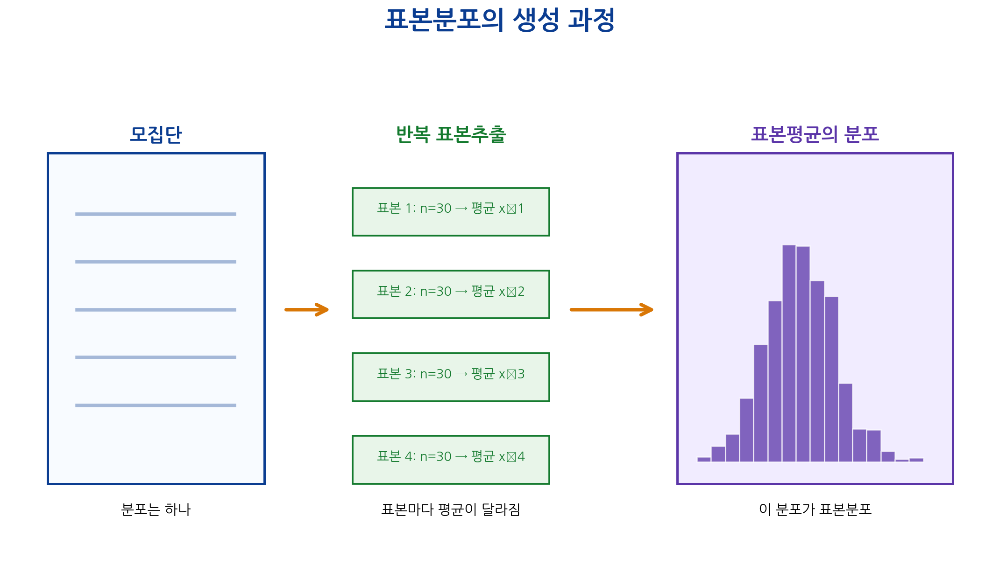
현실 연구에서는 보통 표본을 한 번만 뽑는다. 그러면 표본평균도 하나만 얻어진다. 표본분포는 실제 연구에서 눈앞에 모두 관찰되는 분포가 아니라, 같은 연구를 같은 조건에서 반복했을 때 통계량이 어떻게 흔들릴지를 설명하는 이론적 분포이다.
이 점이 학생들이 가장 어려워하는 부분이다.
데이터셋은 하나지만, 통계적 추론은 “이 데이터셋이 가능한 많은 표본 중 하나”라는 관점에서 출발한다.
따라서 표본분포는 실제로 1,000번 연구를 반복해야만 존재하는 개념이 아니다. 반복 표본추출을 상상하거나 시뮬레이션하여 이해할 수 있는 이론적 개념이다.
표본분포를 알면 다음 질문에 답할 수 있다.
즉 표본분포는 신뢰구간과 가설검정의 수학적 기반이다.
표준오차(standard error, SE)는 통계량의 표본분포의 표준편차이다.
표본평균 \(\bar{X}\)의 표준오차는 다음과 같다.
\[SE(\bar{X})=SD(\bar{X})\]
앞에서 표본평균의 분산을 다음과 같이 유도했다.
\[Var(\bar{X})=\frac{\sigma^2}{n}\]
따라서 표본평균의 표준오차는 다음과 같다.
\[SE(\bar{X})=\frac{\sigma}{\sqrt{n}}\]
실제 연구에서는 모집단 표준편차 \(\sigma\)를 모르는 경우가 많다. 그래서 보통 표본 표준편차 \(s\)를 이용하여 표준오차를 추정한다.
\[\widehat{SE}(\bar{X})=\frac{s}{\sqrt{n}}\]
표준편차와 표준오차는 이름이 비슷하지만 전혀 다른 질문에 답한다.
| 구분 | 표준편차 SD | 표준오차 SE |
|---|---|---|
| 무엇의 변동성인가? | 개별 관찰값의 변동성 | 통계량, 특히 표본평균의 변동성 |
| 계산 대상 | 한 표본 안의 개인 값들 | 반복 표본에서 얻을 표본평균들 |
| 표본 크기가 커지면? | 모집단 변동성 자체는 크게 변하지 않음 | \(1/\sqrt{n}\)에 비례하여 작아짐 |
| 해석 | 환자들 사이의 차이 | 평균 추정의 불확실성 |
| 예 | 혈압 개인값들이 얼마나 퍼져 있는가? | 평균 혈압 추정값이 얼마나 흔들리는가? |
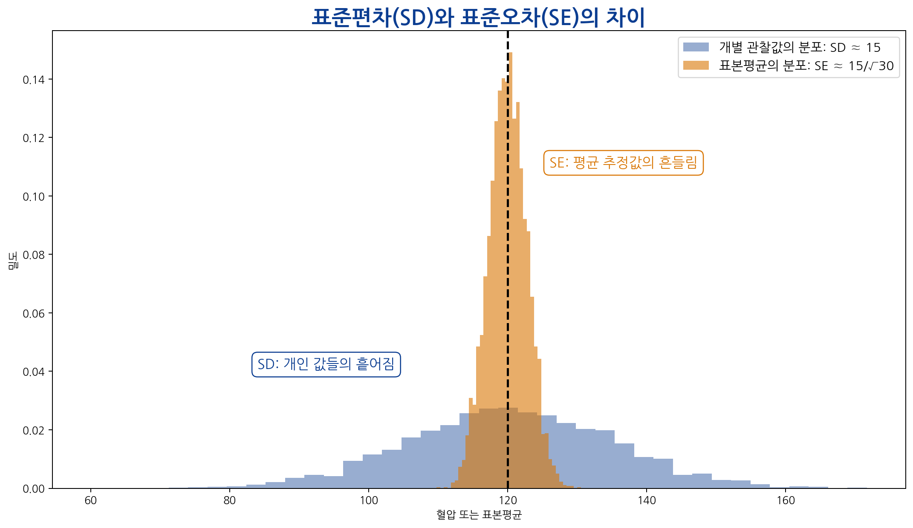
중요한 점은 표본 크기가 커진다고 해서 환자 개개인의 혈압 차이가 사라지는 것은 아니라는 것이다. 하지만 평균을 추정하는 불확실성은 줄어든다. 즉 큰 표본은 개인 간 차이를 없애는 것이 아니라, 평균에 대한 추정을 더 정밀하게 만든다.
표준오차는 표본평균이 표본마다 얼마나 흔들릴지를 나타낸다.
예를 들어 모집단 표준편차가 \(\sigma=15\)이고 표본 크기가 \(n=25\)라면 표본평균의 표준오차는 다음과 같다.
\[SE=\frac{15}{\sqrt{25}}=\frac{15}{5}=3\]
이는 표본평균이 반복 표본추출에서 대략 3 mmHg 정도의 표준편차를 가지고 흔들린다는 뜻이다.
정규분포 근사가 가능하다면 표본평균은 대략 다음 분포를 따른다.
\[\bar{X}\approx N\left(\mu,\frac{\sigma^2}{n}\right)\]
따라서 표본평균은 모평균 \(\mu\) 주변에서 흔들리며, 그 흔들림의 크기가 \(\sigma/\sqrt{n}\)이다.
표본평균의 표준오차 공식은 다음과 같다.
\[SE=\frac{\sigma}{\sqrt{n}}\]
이 식에서 \(\sigma\)가 일정하다고 하면, 표본 크기 \(n\)이 커질수록 \(SE\)는 작아진다. 하지만 중요한 점은 \(SE\)가 \(n\)에 반비례하는 것이 아니라 \(\sqrt{n}\)에 반비례한다는 것이다.
예를 들어 \(\sigma=20\)이라고 하자.
| 표본 크기 \(n\) | 표준오차 \(20/\sqrt{n}\) |
|---|---|
| 25 | 4 |
| 100 | 2 |
| 400 | 1 |
표본 크기를 25에서 100으로 4배 늘리면 표준오차는 4에서 2로 절반이 된다. 다시 100에서 400으로 4배 늘리면 표준오차는 2에서 1로 절반이 된다.
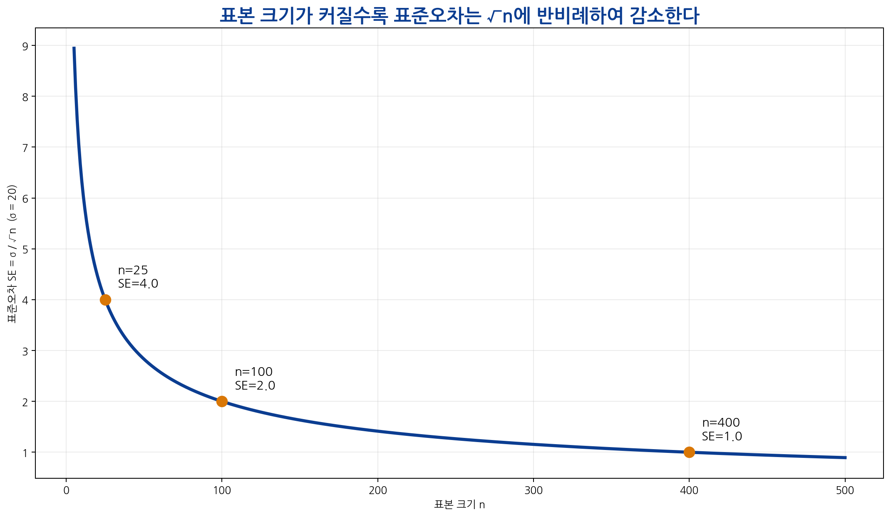
표준오차를 현재의 절반으로 줄이고 싶다고 하자. 현재 표본 크기가 \(n\)일 때 표준오차는 다음과 같다.
\[SE_1=\frac{\sigma}{\sqrt{n}}\]
표본 크기를 \(kn\)으로 늘리면 표준오차는 다음과 같다.
\[SE_2=\frac{\sigma}{\sqrt{kn}} =\frac{\sigma}{\sqrt{k}\sqrt{n}} =\frac{1}{\sqrt{k}}SE_1\]
표준오차를 절반으로 만들려면
\[SE_2=\frac{1}{2}SE_1\]
이어야 한다. 따라서
\[\frac{1}{\sqrt{k}}=\frac{1}{2}\]
이고,
\[\sqrt{k}=2\]
따라서
\[k=4\]
이다. 즉 표준오차를 절반으로 줄이려면 표본 크기를 네 배로 늘려야 한다.
표본 크기가 커지면 표준오차는 작아진다. 그러나 표본 크기를 키운다고 모든 문제가 해결되는 것은 아니다.
| 문제 | 표본 크기를 키우면 해결되는가? | 설명 |
|---|---|---|
| 우연 표본변동성 | 어느 정도 해결 | SE가 작아짐 |
| 대표성 부족 | 해결 안 됨 | 편향된 표본은 크게 뽑아도 편향됨 |
| 측정오차 | 자동 해결 안 됨 | 측정 방법 개선 필요 |
| 교란 | 자동 해결 안 됨 | 설계 또는 분석에서 통제 필요 |
| 선택 편향 | 해결 안 됨 | 표본추출 과정 자체를 개선해야 함 |
큰 표본은 정밀성을 높일 수 있지만, 편향을 자동으로 제거하지는 못한다. 따라서 표본 크기와 연구 설계는 모두 중요하다.
중심극한정리(central limit theorem, CLT)는 통계학에서 가장 중요한 정리 중 하나이다.
중심극한정리는 다음을 말한다.
표본 크기가 충분히 크면, 원래 모집단 분포가 어떤 모양이든 표본평균의 분포는 정규분포에 가까워진다.
좀 더 수식으로 표현하면, \(X_1,X_2,\ldots,X_n\)이 서로 독립이고 같은 분포를 따르며 평균이 \(\mu\), 분산이 \(\sigma^2\)라고 할 때,
\[\bar{X}=\frac{1}{n}\sum_{i=1}^{n}X_i\]
는 표본 크기 \(n\)이 커질수록 다음 정규분포에 가까워진다.
\[\bar{X}\approx N\left(\mu,\frac{\sigma^2}{n}\right)\]
표준화하면 다음과 같다.
\[Z=\frac{\bar{X}-\mu}{\sigma/\sqrt{n}}\approx N(0,1)\]
이 결과는 원래 자료가 정규분포가 아니어도 성립한다는 점에서 매우 강력하다.
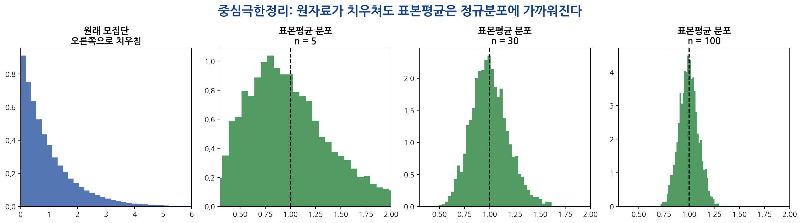
실제 의학 자료는 정규분포를 따르지 않는 경우가 많다.
그럼에도 많은 통계적 방법에서 평균에 대한 추론을 할 수 있는 이유는 중심극한정리 때문이다. 표본 크기가 충분히 크면 표본평균의 분포가 정규분포에 가까워지므로, 정규분포를 이용해 신뢰구간과 가설검정을 구성할 수 있다.
중심극한정리는 매우 유용하지만 모든 상황에서 무조건 안전하게 적용되는 것은 아니다.
예를 들어 의료비처럼 극단값이 매우 많은 자료에서는 표본평균의 분포가 정규분포에 가까워지는 데 큰 표본이 필요할 수 있다. 또한 생존 시간 분석에서는 단순 평균보다 생존분석 방법이 더 적절할 수 있다.
많은 학생이 “중심극한정리 때문에 자료가 정규분포가 된다”고 오해한다. 정확한 표현은 다르다.
| 오해 | 올바른 설명 |
|---|---|
| 표본 크기가 커지면 원자료가 정규분포가 된다 | 원자료의 분포가 바뀌는 것은 아니다 |
| 중심극한정리는 모든 값이 정규분포를 따른다는 뜻이다 | 표본평균의 분포가 정규분포에 가까워진다는 뜻이다 |
| 표본이 크면 모든 분석에서 정규성을 걱정하지 않아도 된다 | 분석 대상과 목적에 따라 여전히 분포 확인이 필요하다 |
중심극한정리는 자료 자체의 분포에 대한 정리가 아니라 표본평균의 표본분포에 대한 정리이다.
표본에서 평균 혈압이 130 mmHg로 계산되었다고 하자.
\[\bar{x}=130\]
이 값은 모평균 \(\mu\)에 대한 하나의 추정값이다. 이를 점추정(point estimation)이라고 한다. 그러나 점추정 하나만 제시하면 추정의 불확실성을 알 수 없다.
예를 들어 다음 두 연구를 비교해 보자.
| 연구 | 표본평균 | 표준오차 | 해석 |
|---|---|---|---|
| 연구 A | 130 | 1 | 비교적 정밀한 추정 |
| 연구 B | 130 | 5 | 불확실성이 큰 추정 |
두 연구의 표본평균은 같지만 표준오차가 다르다. 따라서 두 연구의 정보량은 다르다. 신뢰구간은 이 차이를 반영한다.
표본평균이 정규분포에 가깝게 분포한다고 하면,
\[\bar{X}\approx N\left(\mu,SE^2\right)\]
이다. 표준화하면,
\[Z=\frac{\bar{X}-\mu}{SE}\approx N(0,1)\]
표준정규분포에서 가운데 약 95%는 다음 구간에 있다.
\[-1.96 \leq Z \leq 1.96\]
따라서 평균에 대한 근사적인 95% 신뢰구간은 다음과 같은 형태를 가진다.
\[\bar{x}\pm 1.96\times SE\]
즉,
\[(\bar{x}-1.96SE,\ \bar{x}+1.96SE)\]
이다.
표본평균 혈압이 130이고 표준오차가 2라고 하자.
\[\bar{x}=130,\quad SE=2\]
95% 신뢰구간은 다음과 같다.
\[130\pm 1.96\times 2\]
\[=130\pm 3.92\]
따라서
\[(126.08,\ 133.92)\]
이다.
이 구간은 모평균 혈압에 대한 불확실성을 나타낸다. 표본평균 130 하나만 제시하는 것보다 훨씬 더 많은 정보를 제공한다.
95% 신뢰구간은 다음과 같이 해석해야 한다.
같은 방법으로 표본을 반복해서 뽑고 매번 95% 신뢰구간을 만들면, 그 구간들 중 약 95%는 실제 모평균을 포함한다.
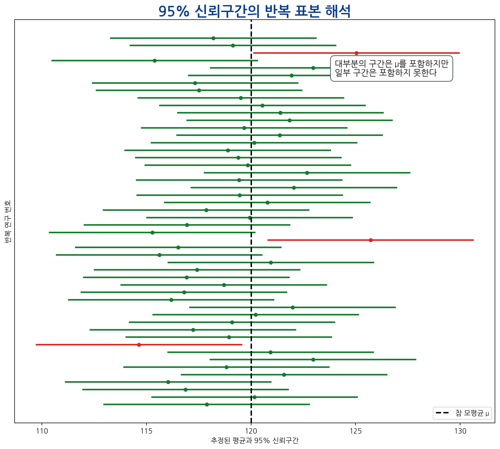
잘못된 해석도 반드시 구분해야 한다.
| 잘못된 해석 | 왜 잘못인가? |
|---|---|
| 모평균이 이 구간 안에 있을 확률이 95%이다 | 빈도주의 관점에서 모평균은 고정된 값이다 |
| 표본자료의 95%가 이 구간 안에 있다 | 신뢰구간은 개별 관찰값의 범위가 아니다 |
| 미래 환자의 95%가 이 구간 안에 있다 | 예측구간과 신뢰구간을 혼동한 것이다 |
| 95% 신뢰구간이면 연구 결과가 95% 확실히 참이다 | 신뢰구간은 추정의 불확실성을 나타낸다 |
신뢰구간은 다음 장에서 더 자세히 다룬다. 이번 장에서는 신뢰구간이 표준오차와 표본분포에서 나온다는 점을 이해하는 것이 중요하다.
평균뿐 아니라 비율도 표본마다 달라진다. 예를 들어 어떤 치료제의 실제 성공률이 \(p=0.7\)이라고 하자. 표본 크기 100명으로 연구를 반복하면 어떤 연구에서는 성공률이 68%, 어떤 연구에서는 74%, 또 다른 연구에서는 71%처럼 나올 수 있다.
표본비율은 다음과 같이 쓴다.
\[\hat{p}=\frac{X}{n}\]
여기서 \(X\)는 성공자 수이고, \(n\)은 표본 크기이다.
성공자 수가 이항분포를 따른다고 하자.
\[X\sim Binomial(n,p)\]
표본비율은 다음과 같다.
\[\hat{p}=\frac{X}{n}\]
이항분포에서
\[E(X)=np\]
이고,
\[Var(X)=np(1-p)\]
이다. 따라서 표본비율의 기대값은 다음과 같다.
\[E(\hat{p})=E\left(\frac{X}{n}\right)=\frac{1}{n}E(X)=p\]
표본비율의 분산은 다음과 같다.
\[Var(\hat{p})=Var\left(\frac{X}{n}\right)=\frac{1}{n^2}Var(X)\]
\[=\frac{1}{n^2}np(1-p)=\frac{p(1-p)}{n}\]
따라서 표본비율의 표준오차는 다음과 같다.
\[SE(\hat{p})=\sqrt{\frac{p(1-p)}{n}}\]
실제 연구에서는 \(p\)를 모르므로 \(\hat{p}\)를 사용한다.
\[\widehat{SE}(\hat{p})=\sqrt{\frac{\hat{p}(1-\hat{p})}{n}}\]
100명의 환자 중 70명이 치료에 성공했다고 하자.
\[\hat{p}=\frac{70}{100}=0.70\]
표준오차는 다음과 같다.
\[\widehat{SE}(\hat{p})=\sqrt{\frac{0.70(1-0.70)}{100}}\]
\[=\sqrt{\frac{0.21}{100}}\]
\[=\sqrt{0.0021} \approx 0.0458\]
근사적인 95% 신뢰구간은 다음과 같다.
\[0.70\pm 1.96\times 0.0458\]
\[=0.70\pm 0.0898\]
따라서 대략
\[(0.610,\ 0.790)\]
이다. 즉 치료 성공률은 약 61.0%에서 79.0% 사이로 추정된다.
의학 논문에서는 다음과 같은 결과를 자주 본다.
| 결과 표현 | 의미 |
|---|---|
| Mean difference: 5.2 mmHg, 95% CI 2.1 to 8.3 | 평균 차이의 추정값과 불확실성 |
| Risk ratio: 0.75, 95% CI 0.60 to 0.92 | 위험비의 추정값과 불확실성 |
| Odds ratio: 1.80, 95% CI 1.20 to 2.70 | 오즈비의 추정값과 불확실성 |
| Hazard ratio: 1.40, 95% CI 1.10 to 1.78 | 위험비의 추정값과 불확실성 |
여기서 95% CI는 단순한 부가 정보가 아니다. 추정값이 얼마나 정밀한지, 임상적으로 의미 있는 범위를 포함하는지, 효과의 방향이 일관적인지 판단하는 핵심 정보이다.
p-value는 보통 귀무가설과 비교하여 관찰된 결과가 얼마나 드문지를 나타낸다. 하지만 p-value만으로는 효과의 크기나 추정의 정밀성을 충분히 알 수 없다.
예를 들어 다음 두 결과를 비교해 보자.
| 연구 | 평균 차이 | 95% 신뢰구간 | p-value |
|---|---|---|---|
| A | 5.0 | 4.5 to 5.5 | <0.001 |
| B | 5.0 | 0.2 to 9.8 | 0.04 |
두 연구 모두 통계적으로 유의할 수 있지만, 연구 A는 추정이 매우 정밀하고 연구 B는 불확실성이 크다. 신뢰구간을 함께 봐야 임상적 의미를 판단할 수 있다.
먼저 평균 120, 표준편차 15인 큰 모집단을 가정하자.
set.seed(123)
population <- rnorm(100000, mean = 120, sd = 15)
hist(
population,
breaks = 50,
main = "Population Distribution",
xlab = "Systolic blood pressure"
)
mean(population)[1] 120.0147sd(population)[1] 14.996이 모집단은 평균이 약 120, 표준편차가 약 15인 정규분포에 가깝다.
이제 모집단에서 30명을 표본으로 뽑아 보자.
set.seed(123)
sample_data <- sample(population, size = 30)
sample_data [1] 124.07054 110.49166 110.04679 124.60283 110.35895 143.89295 150.96333
[8] 100.03696 113.45240 117.94743 101.93412 119.20738 147.84311 136.45445
[15] 114.87203 126.49564 139.93503 129.82614 109.01034 102.66160 121.92431
[22] 146.51418 93.61252 111.12153 129.47279 105.36785 109.73374 155.87030
[29] 128.33802 113.39758mean(sample_data)[1] 121.6485sd(sample_data)[1] 16.46474표본평균은 모집단 평균과 정확히 같지 않다. 표본은 모집단의 일부이기 때문이다.
이번에는 표본 크기 30인 표본을 1,000번 뽑고, 매번 표본평균을 계산한다.
set.seed(123)
sample_means <- replicate(
1000,
mean(sample(population, size = 30))
)
head(sample_means)[1] 121.6485 116.0979 115.5803 120.8392 117.6296 120.8621mean(sample_means)[1] 119.963sd(sample_means)[1] 2.780355sample_means는 1,000개의 표본평균을 담고 있다. 이 값들의 분포가 표본평균의 표본분포를 시뮬레이션한 것이다.
hist(
sample_means,
breaks = 30,
probability = TRUE,
main = "Sampling Distribution of the Mean, n = 30",
xlab = "Sample mean"
)
curve(
dnorm(x, mean = mean(sample_means), sd = sd(sample_means)),
add = TRUE,
lwd = 2
)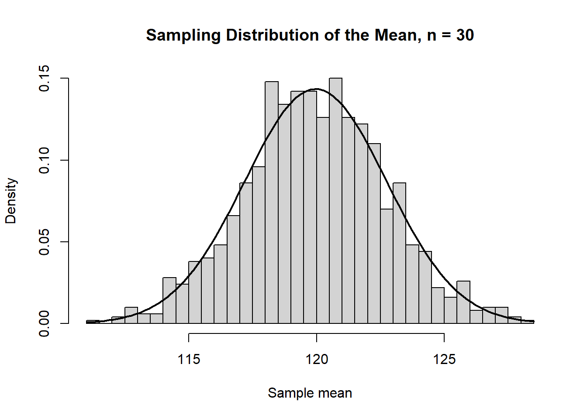
표본평균의 분포는 원래 모집단보다 좁게 모여 있다. 그 퍼짐의 정도가 표준오차이다.
이론적 표준오차는 다음과 같다.
15 / sqrt(30)[1] 2.738613시뮬레이션으로 얻은 표본평균들의 표준편차는 다음과 같다.
sd(sample_means)[1] 2.780355두 값이 비슷하면 표본평균의 표준오차 공식이 시뮬레이션 결과와 잘 맞는다는 것을 확인할 수 있다.
표본 크기 10, 30, 100에서 표본평균의 분포를 비교하자.
set.seed(123)
sample_means_10 <- replicate(
1000,
mean(sample(population, size = 10))
)
sample_means_30 <- replicate(
1000,
mean(sample(population, size = 30))
)
sample_means_100 <- replicate(
1000,
mean(sample(population, size = 100))
)
sd(sample_means_10)[1] 4.813568sd(sample_means_30)[1] 2.664475sd(sample_means_100)[1] 1.487598표본 크기가 커질수록 표본평균들의 표준편차, 즉 표준오차가 작아진다.
par(mfrow = c(1, 3))
hist(sample_means_10, breaks = 30, main = "n = 10", xlab = "Sample mean")
hist(sample_means_30, breaks = 30, main = "n = 30", xlab = "Sample mean")
hist(sample_means_100, breaks = 30, main = "n = 100", xlab = "Sample mean")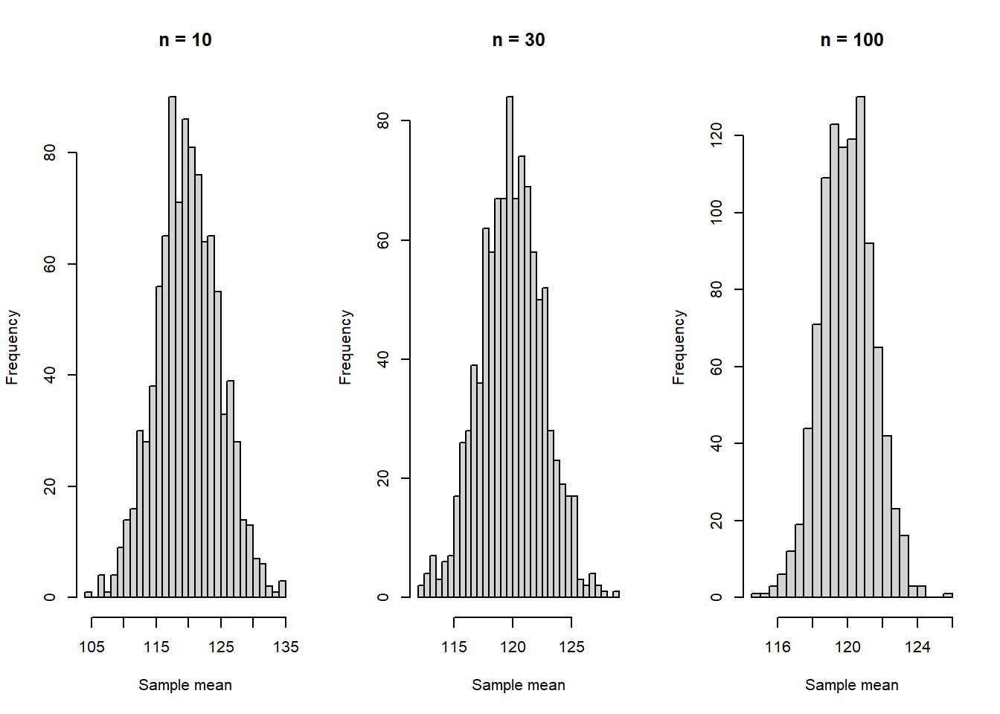
par(mfrow = c(1, 1))이번에는 오른쪽으로 치우친 지수분포 모집단을 만든다.
set.seed(123)
skewed_population <- rexp(100000, rate = 1)
hist(
skewed_population,
breaks = 50,
main = "Skewed Population",
xlab = "Value"
)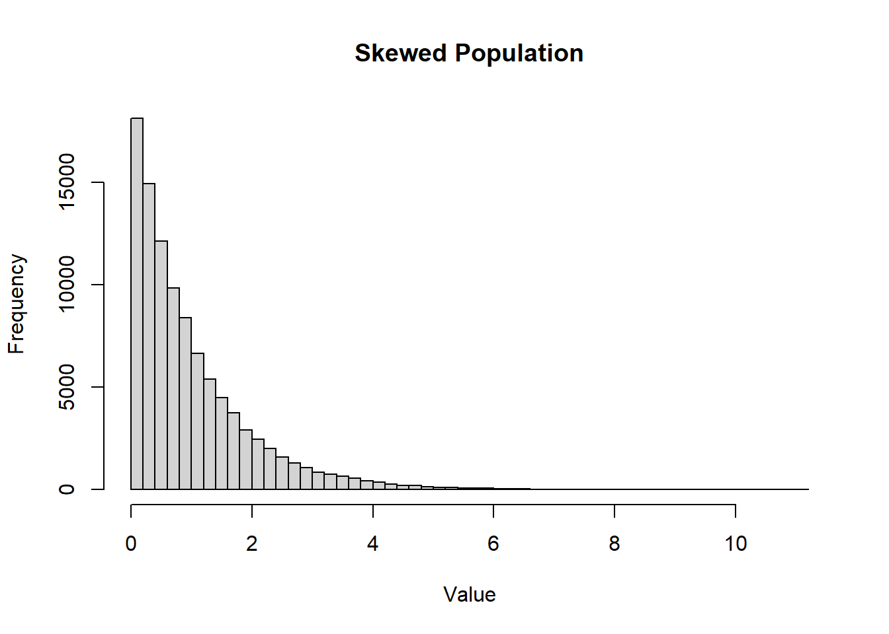
원래 모집단은 정규분포가 아니다. 이제 이 모집단에서 표본 크기 50으로 표본을 반복 추출하여 표본평균을 계산한다.
set.seed(123)
skewed_sample_means <- replicate(
1000,
mean(sample(skewed_population, size = 50))
)
hist(
skewed_sample_means,
breaks = 30,
probability = TRUE,
main = "Sampling Distribution from Skewed Population",
xlab = "Sample mean"
)
curve(
dnorm(x, mean = mean(skewed_sample_means), sd = sd(skewed_sample_means)),
add = TRUE,
lwd = 2
)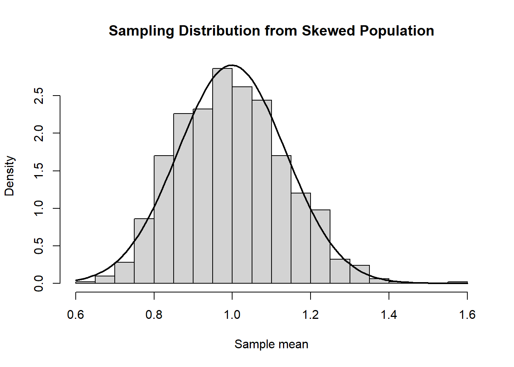
원래 모집단은 오른쪽으로 치우쳐 있지만, 표본평균의 분포는 훨씬 대칭적이며 정규분포에 가까워진다.
표본평균과 표준오차를 이용하여 근사적인 95% 신뢰구간을 계산해 보자.
xbar <- mean(sample_data)
s <- sd(sample_data)
n <- length(sample_data)
se <- s / sqrt(n)
lower <- xbar - 1.96 * se
upper <- xbar + 1.96 * se
c(lower, upper)[1] 115.7567 127.5404R에는 t분포를 이용한 평균의 신뢰구간을 자동으로 계산하는 함수도 있다.
t.test(sample_data)$conf.int[1] 115.5005 127.7966
attr(,"conf.level")
[1] 0.95표본 크기가 작거나 모집단 표준편차를 모르는 경우에는 정규분포의 1.96 대신 t분포를 사용하는 것이 일반적이다. 이 내용은 다음 장에서 더 자세히 다룬다.
치료 성공 여부 자료를 시뮬레이션해 보자.
set.seed(123)
response <- rbinom(n = 100, size = 1, prob = 0.7)
phat <- mean(response)
phat[1] 0.71표본비율의 표준오차는 다음과 같다.
se_phat <- sqrt(phat * (1 - phat) / length(response))
se_phat[1] 0.04537621근사적인 95% 신뢰구간은 다음과 같다.
phat + c(-1, 1) * 1.96 * se_phat[1] 0.6210626 0.7989374